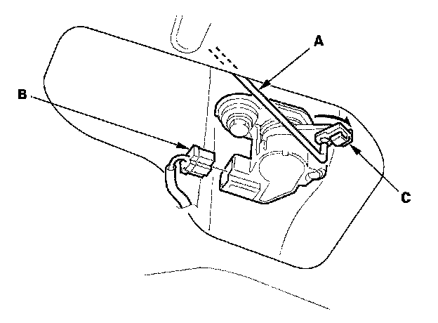
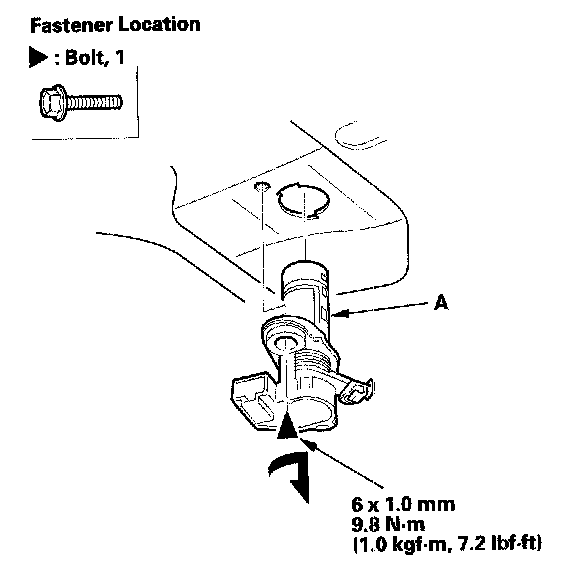
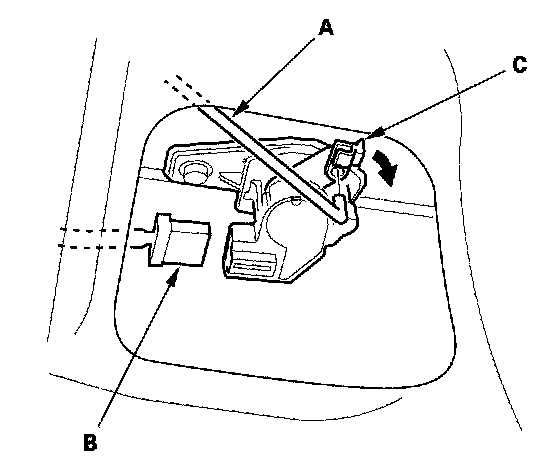
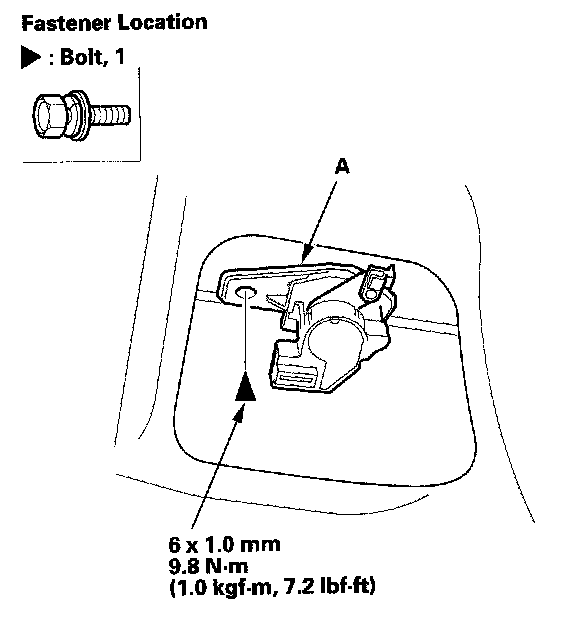
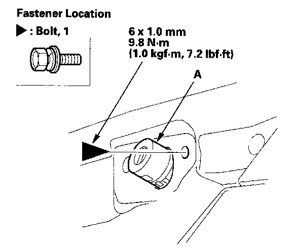
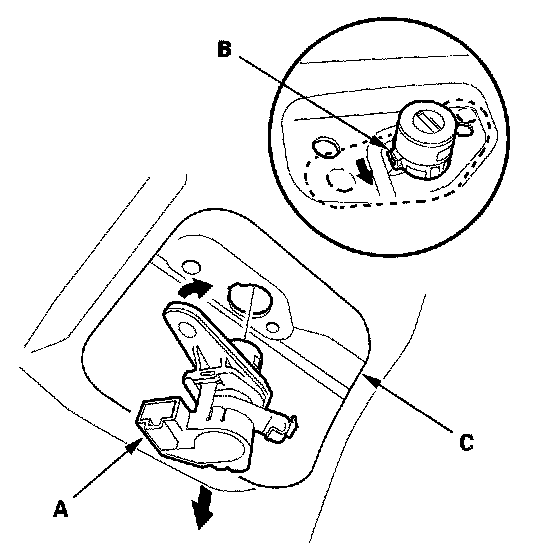

Trunk / Liftgate Lock Cylinder: Service and Repair
Trunk Lid Lock Cylinder Replacement2-door

1. Disconnect the cylinder rod (A), and if equipped, disconnect the cylinder switch connector (B).
NOTE: Check for damaged or stress-whitened rod fastener (C).

2. Remove the bolt securing the lock cylinder (A). Then turn the trunk lid lock cylinder clockwise, and remove it.
3. Install the lock cylinder in the reverse order of removal, and note these items:
- Replace the rod fastener if it is damaged.
- Make sure the cylinder switch connector is plugged in properly (if equipped) and the cylinder rod is connected properly.
- Make sure the trunk lid opens properly and locks securely.
4-door
1. If equipped, remove the trunk lid trim.

2. Disconnect the cylinder rod (A), and if equipped, disconnect the cylinder switch connector (B).
NOTE: Check for damaged or stress-whitened, rod fastener (C).

3. Remove the bolt securing the lock cylinder (A).
4. Remove the rear license trim.

5. Remove the bolt securing the lock cylinder (A).

6. Turn the lock cylinder (A) to release the hook (B) from the trunk lid (C), then remove the lock cylinder.
7. Install the lock cylinder in the reverse order of removal, and note these items:
- Replace the rod fastener if it is damaged.
- Make sure the cylinder switch connector is plugged in properly (if equipped) and the cylinder rod is connected properly.
- Make sure the trunk lid opens properly and locks securely.